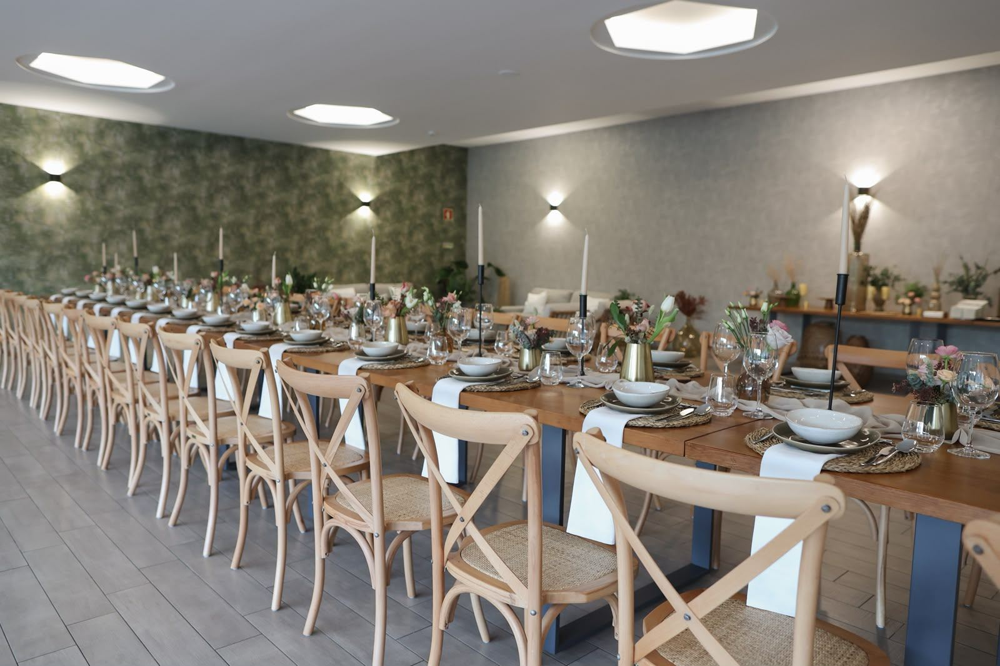
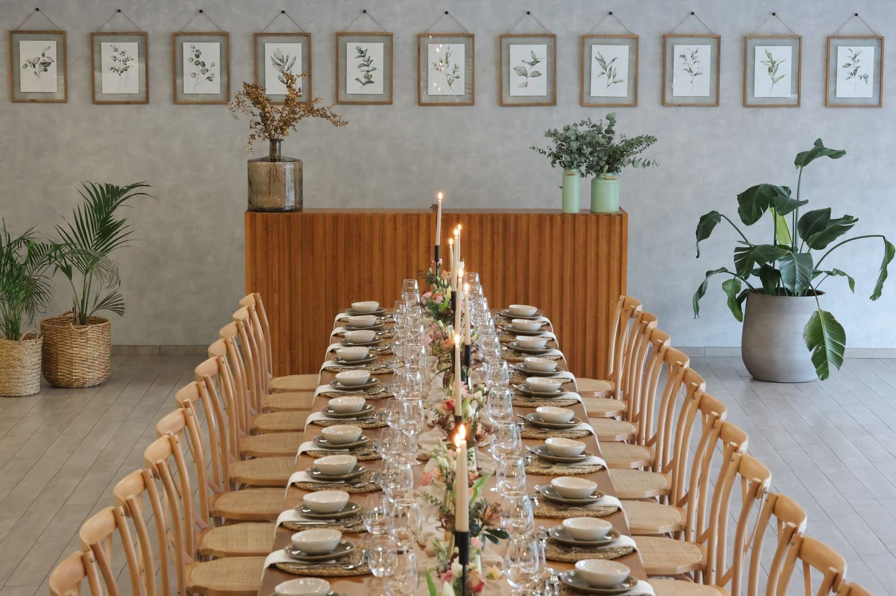
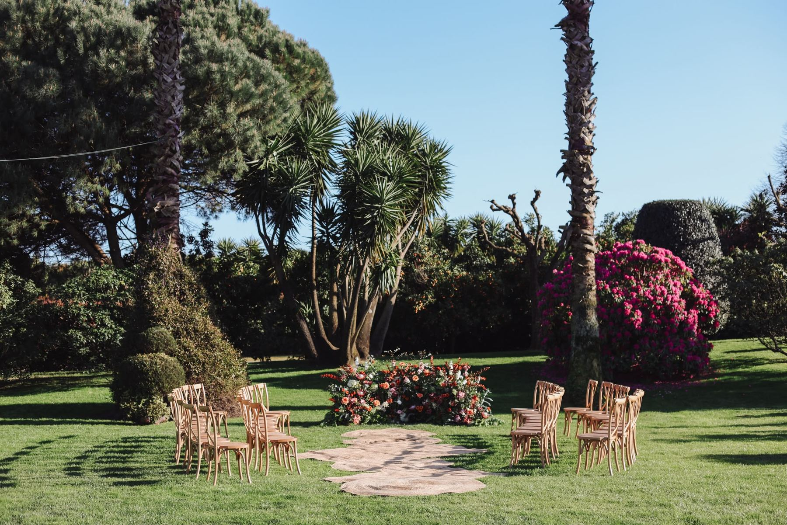
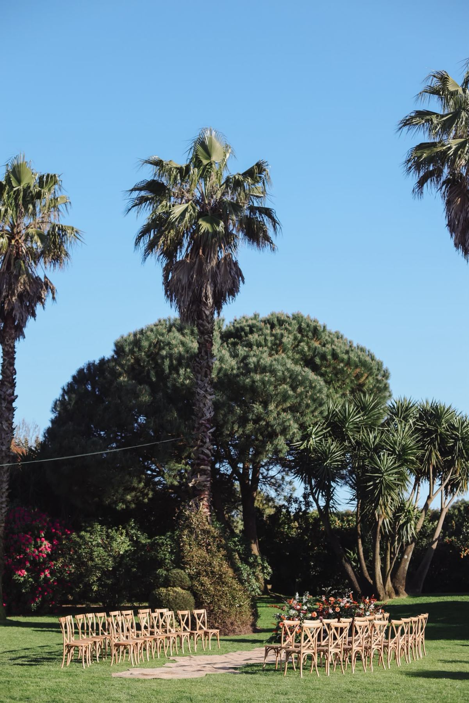
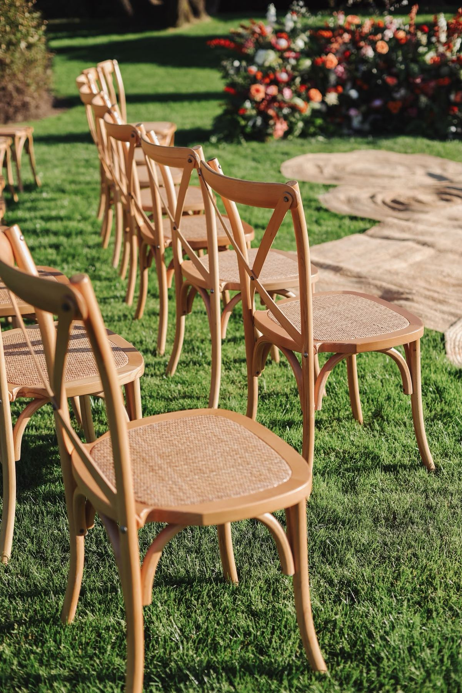
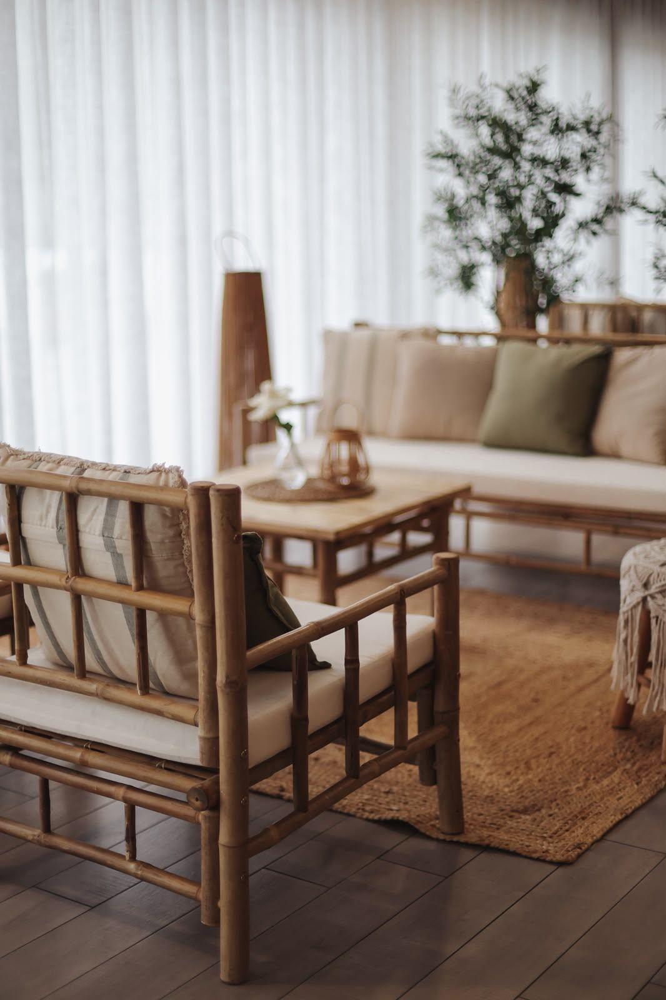
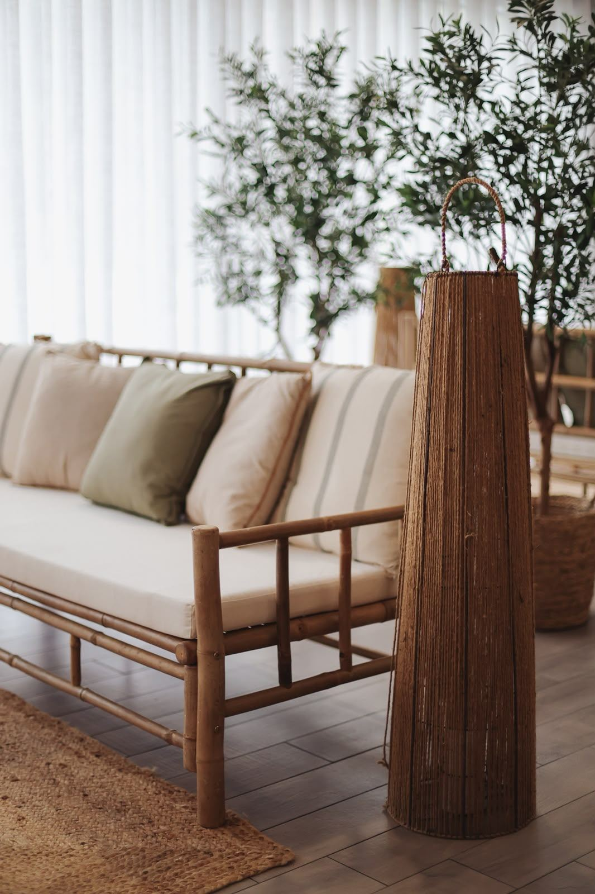
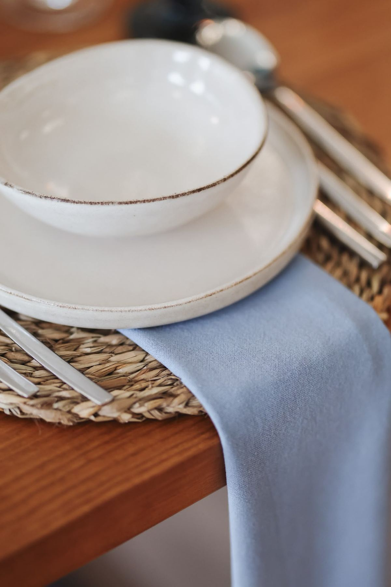
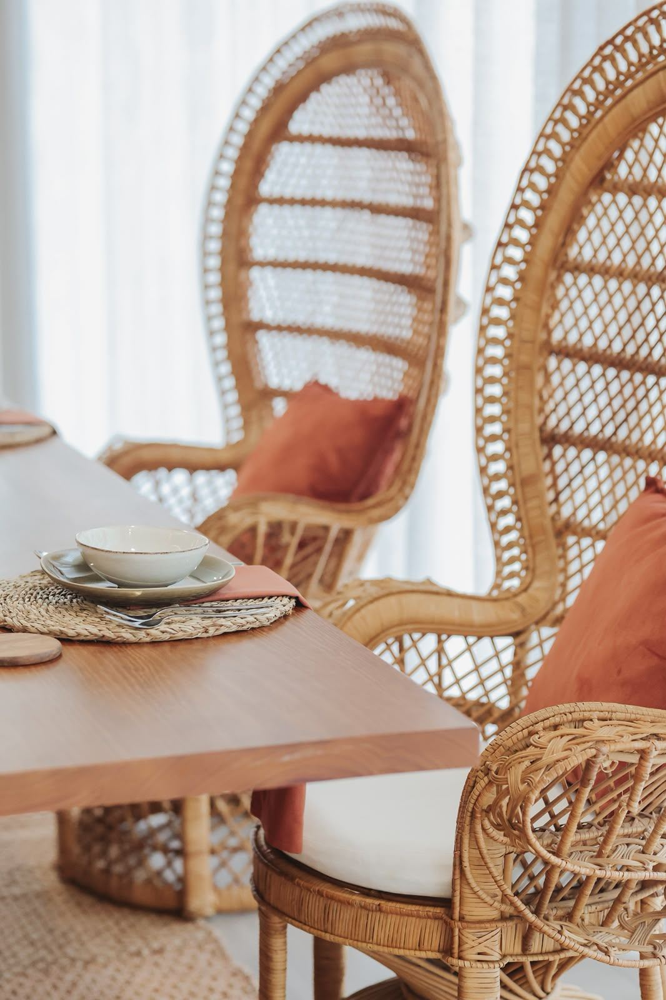

Os espaços
Um salão interior, um jardim amplo e uma zona de lounge. Como a Quinta recebe um evento de cada vez, todos os espaços ficam reservados para si.
Salão interior
Paredes claras, luz quente e mesas de madeira que se adaptam ao seu evento: uma mesa imperial para todos, ou mesas redondas para cada família.
- Mesas imperiais ou redondas
- Cadeiras e mesas em madeira
- Iluminação ambiente para a noite


Jardim
Relvado, palmeiras e canteiros floridos. É aqui que se fazem as cerimónias ao ar livre e as fotografias de que se vai lembrar.
- Cerimónias no relvado
- Espaço para receber os convidados
- Recantos à sombra para fotografias


A poucos passos da festa
Cadeiras de madeira, um corredor de tapetes de fibra natural e um arranjo floral como cenário. Depois da cerimónia, os convidados seguem a pé para o cocktail.

Lounge
Sofás de bambu, almofadas em tons de linho e oliveiras em vaso. Um lugar para o cocktail, para descansar entre danças ou para uma conversa com calma.


Tratamos de tudo consigo

Catering próprio
A cozinha é da casa. O menu é desenhado consigo e faz parte da proposta que enviamos depois da visita.

Mobiliário e decoração
Mesas, cadeiras, loiça e peças de decoração para criar o ambiente que imaginou.
Estacionamento
Estacionamento para os convidados na própria Quinta, em Gemunde, na Maia, perto do Porto.
Como chegar